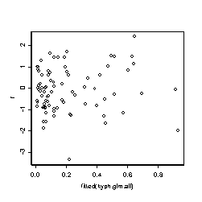

| / Home |
| S-Archive | Download Script |
| qres | Randomized quantile residuals |
| glm.obj | Object of class "glm". The generalized linear model family is assumed to be "binomial" for qres.binom, "poisson" for qres.pois, "negative binomial" for qres.nbinom, "Gamma" for qres.gamma, "inverse Gaussian" for qres.invgauss or "tweedie" for qres.tweedie. |
| dispersion | a positive real number. Specifies the value of the dispersion parameter for a Gamma or inverse Gaussian generalized linear model if known. If NULL, the dispersion will be estimated by its Pearson estimator (gamma) or by restricted maximum likelihood (inverse Gaussian). |
> kyph.glm <- glm(Kyphosis ~ Age+Number+Start, family=binomial, data=kyphosis) > r <- qres.binom(kyph.glm) > plot(fitted(kyph.glm),r)

> plot(kyphosis$Age,r) > plot(kyphosis$Number,r) > plot(kyphosis$Start,r)
# Gamma example with chisquare responses on 1 df
glm.obj <- glm(y~x,family=Gamma(link="log"))
qr <- qres.gamma(glm.obj,dispersion=2)
qqnorm(qr)
abline(0,1)
| S-Archive | Download Script |
Gordon Smyth. Copyright © 1996-2016. Last modified: 10 February 2004